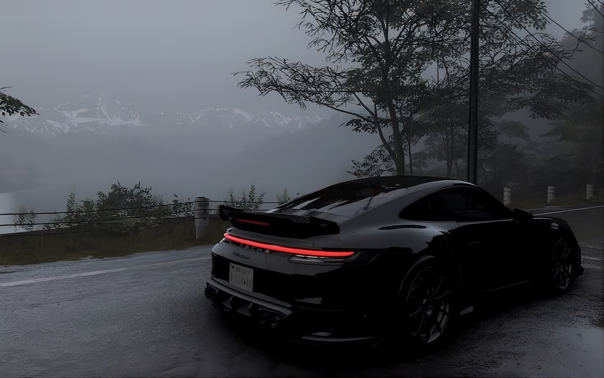

Aerodinamika lahir dari sirkuit.

Siluet seimbang yang dibentuk untuk stabilitas dan kecepatan.

Ekspresi rekayasa performa yang paling tajam. Telusuri angka-angka kunci dan gagasan di balik showcase konsep berorientasi sirkuit ini.
*Angka referensi ilustratif untuk 911 GT3 RS; spesifikasi dapat berbeda tergantung tahun model dan pasar. Verifikasi dengan spesifikasi resmi Porsche.
Buka setiap bab rekayasa di bawah ini untuk menggali detailnya.
Permukaan yang terencana, aliran udara yang terkelola dengan cermat, dan detail aerodinamika berorientasi sirkuit bekerja bersama untuk mendukung stabilitas dan kepercayaan diri di tikungan. Setiap garis dibentuk oleh fungsi sebanyak bentuk.
Rekayasa berbasis bobot menciptakan koneksi yang langsung dan responsif antara pengemudi dan sasis. Pilihan material menyeimbangkan kekakuan struktural dengan bobot minimal.


Karakter flat-six berputaran tinggi, respons throttle instan, dan pendinginan khas motorsport menjaga konsistensi performa dari lap ke lap.
Daftar SekarangKokpit yang berpusat pada pengemudi menempatkan telemetri penting dan kontrol mode berkendara tepat dalam jangkauan, menjaga fokus di tempat yang seharusnya: pada setiap tikungan.

Bentuk, fungsi, dan emosi motorsport dari setiap sudut pandang.
Siluet seimbang yang dibentuk untuk stabilitas dan kecepatan.
Permukaan bersih dengan asupan udara yang bertujuan.
Pengendalian presisi di jalan pegunungan dan lintasan.
Angka hanya menceritakan sebagian. Jalan yang akan menjawab sisanya.
Ajukan Test Drive